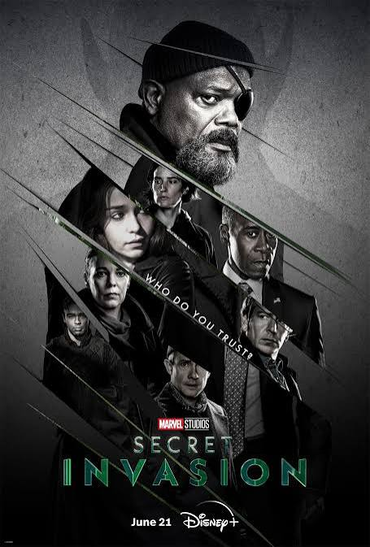
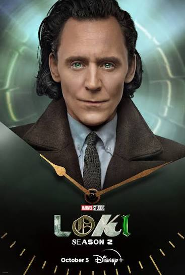

Phase 5
Пятая фаза продолжает Multiverse Saga, расширяет историю MCU и знакомит зрителей с новыми героями, командами и угрозами.

Ant-Man and the Wasp: Quantumania
Скотт Лэнг и его команда оказываются в загадочном квантовом мире.

Secret Invasion
Ник Фьюри возвращается на Землю, чтобы противостоять новой угрозе.

Guardians of the Galaxy Vol. 3
Стражи Галактики отправляются в новое приключение, чтобы спасти одного из своих друзей.

Loki — Season 2
Локи продолжает путешествие по времени и пытается разобраться с последствиями событий первого сезона.

The Marvels
Кэрол Дэнверс, Камала Хан и Моника Рамбо объединяются, чтобы разобраться с необычной угрозой.

Captain America: Brave New World
Сэм Уилсон оказывается в центре международного конфликта.

Thunderbolts*
Необычная команда героев получает опасное задание.